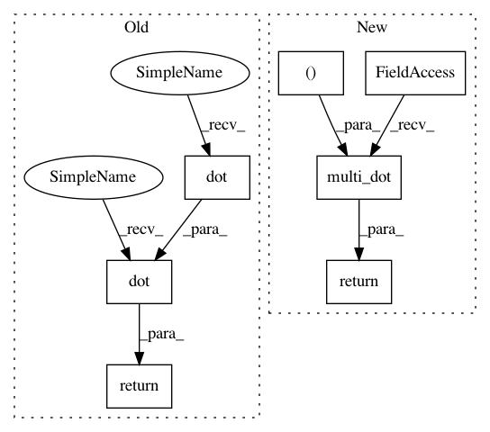

5e56bcc41a7d147c710e57c4c764651c7e148581,pypfopt/hierarchical_portfolio.py,HRPOpt,_get_cluster_var,#Any#Any#,67
Before Change
weights = 1 / np.diag(cov_slice) // Inverse variance weights
weights /= weights.sum()
w = weights.reshape(-1, 1)
cluster_var = np.dot(np.dot(w.T, cov_slice), w)[0, 0]
return cluster_var
@staticmethod
def _get_quasi_diag(link):
After Change
cov_slice = cov.loc[cluster_items, cluster_items]
weights = 1 / np.diag(cov_slice) // Inverse variance weights
weights /= weights.sum()
return np.linalg.multi_dot((weights, cov_slice, weights))
@staticmethod
def _get_quasi_diag(link):
In pattern: SUPERPATTERN
Frequency: 3
Non-data size: 7
Instances
Project Name: robertmartin8/PyPortfolioOpt
Commit Name: 5e56bcc41a7d147c710e57c4c764651c7e148581
Time: 2020-04-30
Author: thomas.schmlezer@gmail.com
File Name: pypfopt/hierarchical_portfolio.py
Class Name: HRPOpt
Method Name: _get_cluster_var
Project Name: robertmartin8/PyPortfolioOpt
Commit Name: 5e56bcc41a7d147c710e57c4c764651c7e148581
Time: 2020-04-30
Author: thomas.schmlezer@gmail.com
File Name: pypfopt/hierarchical_portfolio.py
Class Name: HRPOpt
Method Name: _get_cluster_var
Project Name: robertmartin8/PyPortfolioOpt
Commit Name: 70b08e1d2e703b4e3d16da9aaa04706dd4413232
Time: 2020-05-01
Author: thomas.schmlezer@gmail.com
File Name: pypfopt/hierarchical_portfolio.py
Class Name: HRPOpt
Method Name: _get_cluster_var
Project Name: ysig/GraKeL
Commit Name: 81d6f8fe196facfdcb840ae0fb2be1e3e47caad5
Time: 2018-02-07
Author: y.siglidis@gmail.com
File Name: grakel/kernels/random_walk.py
Class Name: random_walk
Method Name: pairwise_operation